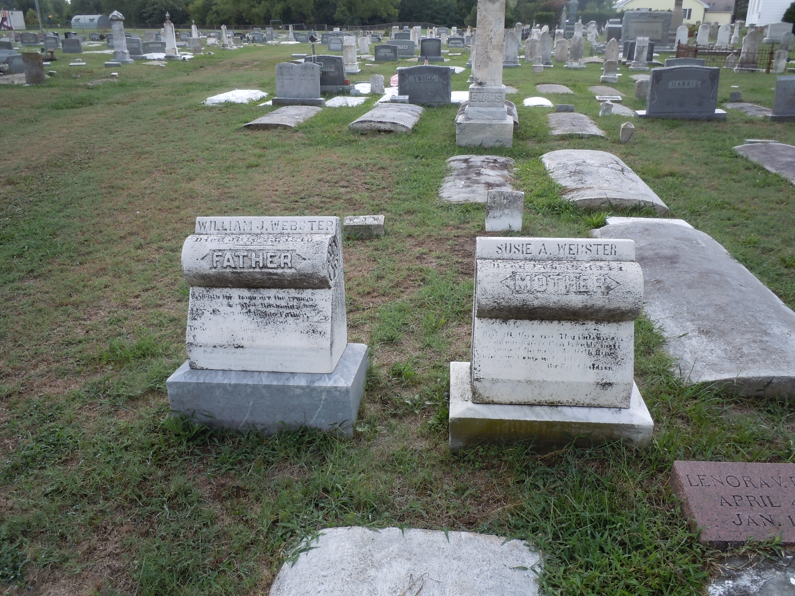

Susan A. "Susie" Windsor
1843–1911
Life Events
Born: December 6, 1843 — Deal Island, Somerset County, Maryland
Died: February 10, 1911 — Deal Island, Somerset County, Maryland
Family
Children
Military Service
No military service information has been added.
Biography
Susan A. Windsor, affectionately known as Susie, was born on Deal Island in Somerset County, Maryland, in 1843. Family research records her birth date as December 6, 1843, and identifies her parents as William Windsor and Susan Jones. These details remain subject to confirmation through historical records.
On December 20, 1865, Susan married Gabriel S. Webster in Somerset County, Maryland. Their marriage is documented in the county marriage register. Family research identifies their children as Anna Elizabeth 'Lizzie' Webster (1868–1940) and William Gabriel Snead Webster (1871–1939).
Gabriel S. Webster died in 1871, approximately six years after their marriage. Susan subsequently married William Jacob Webster (1836–1910). The date of their marriage has not yet been established.
Susan's granddaughter, Susie Catherine Webster Kramer (1902–1993), daughter of William Gabriel Snead Webster and Addie Leola Daniel, was named in her honor, according to family history.
Susan died on February 10, 1911, at Deal Island, Maryland, at the reported age of 68. Her death certificate identifies her as Susie Webster and records pneumonia following la grippe as the cause of death. Her son, Snead Webster, provided the information for the certificate.
Susan was buried on February 12, 1911, at Saint John's Cemetery on Deal Island, beside her second husband, William Jacob Webster, who died in 1910. Their adjacent gravestones identify them as 'MOTHER' and 'FATHER,' respectively.
Photos

Sources
-
1865 Marriage Register – Gabriel S. Webster and Susan A. Windsor
Type: marriage_recordSomerset County, Maryland, marriage register recording the marriage of Gabriel S. Webster and Susan A. Windsor on December 20, 1865. The entry appears immediately below the December 20 marriage entry on a page containing marriages from 1865 and 1866. The original register identifies the couple by name and records their marriage date.
Location: Somerset County, Maryland, United States
Supports: Gabriel S. Webster and Susan A. Windsor were married on December 21, 1865., Their marriage was recorded in Somerset County, Maryland., Gabriel S. Webster was Susan A. Windsor's husband.
-
1911 Maryland Death Certificate – Susan A. Windsor Webster
Type: death_certificateState of Maryland Certificate of Death, Registered No. 5, records the death of Susie Webster on February 10, 1911, at Deal Island, Somerset County, Maryland. She was identified as a 68-year-old white female, born in 1843 on Deal Island, with the occupation of housewife. Her exact birth date was recorded as unknown. Both parents' names were recorded as unknown, with Maryland listed as their birthplace. The informant was Snead Webster of Deal Island, identified in family research as her son William Gabriel Snead Webster. The medical certificate records pneumonia following la grippe, with chronic bronchitis listed as a contributory condition. Burial was recorded at Deal Island, Maryland, on February 12, 1911. The certificate was filed on February 12, 1911.
Location: Deal Island, Somerset County, Maryland, United States
Supports: Susie Webster died on February 10, 1911, at Deal Island, Somerset County, Maryland., Her death certificate records her birth year as 1843 and her birthplace as Deal Island., She was recorded as 68 years old at death., Her occupation was recorded as housewife., The names of both parents were recorded as unknown., Snead Webster of Deal Island was the informant., The recorded cause of death was pneumonia following la grippe., Chronic bronchitis was recorded as a contributory condition., Her burial was recorded at Deal Island, Maryland, on February 12, 1911.